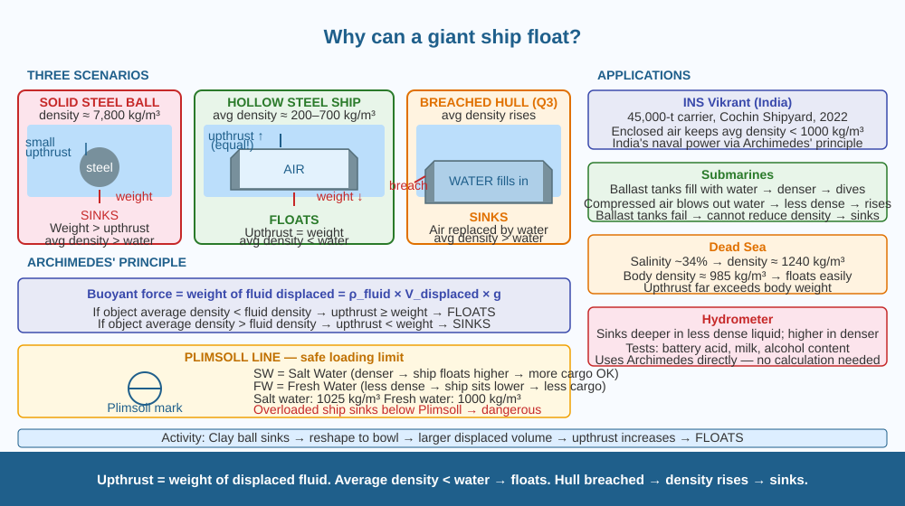

Discover how a 100,000-tonne steel ship floats when a solid steel coin sinks — and understand Archimedes' principle well enough to predict whether any object will float or sink.
A steel ball bearing sinks immediately in water. A steel ship weighing 100,000 tonnes floats. A solid gold coin sinks, but a gold-leaf boat can float. The material is the same in each pair — steel is steel, gold is gold. So what actually determines whether something floats?
Archimedes' Principle:
When an object is placed in a fluid, the fluid exerts an upward force on it called the buoyant force (upthrust). This force equals the weight of the fluid displaced by the object.
Buoyant force = weight of fluid displaced = ρ_fluid × V_displaced × g
Where: - ρ_fluid = density of the fluid (water ≈ 1000 kg/m³) - V_displaced = volume of fluid pushed aside by the object - g = gravitational acceleration (10 m/s²)
The floating rule:
An object floats if the buoyant force ≥ its weight (gravity pulling it down).
This simplifies to a density comparison: - If the object's average density < fluid density → it floats - If the object's average density > fluid density → it sinks
The key word is average density — the density of the object including all the space inside it.
Why the ship floats:
A solid steel block: density ≈ 7,800 kg/m³ >> water (1,000 kg/m³). Sinks.
A steel ship is not solid steel. It is a hollow steel shell enclosing a massive volume of air (density ≈ 1.2 kg/m³). The average density of the whole ship (steel shell + air inside) is around 200–700 kg/m³ — less than water. So it floats.
As the ship is loaded with cargo, its average density increases. If too much cargo is added, it sinks lower. Ships have a Plimsoll line — a mark on the hull showing the maximum safe loading depth for different water types (salt water is denser than fresh water, so ships float higher in the sea than in a river).
The mechanism step by step:
Plimsoll line — why salt water matters:
Salt water (density ≈ 1025 kg/m³) is denser than fresh water (1000 kg/m³). A ship displaces less volume to generate the same upthrust in salt water. So a ship floats higher in the ocean than in a freshwater river. Ships crossing from ocean to river must account for this — they can carry more cargo in salt water than fresh.
Think of the ship as a hollow bowl placed in a sink of water. The bowl is made of steel (dense), but it traps air inside. The total system (steel + air) weighs less per cubic metre than water → it floats. If you fill the bowl with water (sink the air out), the bowl sinks — same steel, but average density now much higher. The question is never "what is the material made of?" but "what is the average density of the whole object?"

The diagram has three panels. Left: A solid steel sphere in water — weight arrow down (larger), buoyant force arrow up (smaller) → net downward → sinks. Centre: A hollow ship in water — weight arrow down, buoyant force arrow up (equal) → equilibrium → floats. Cross-section shows steel hull (dark) with large air gap inside. The displaced water volume is highlighted. Right: Overloaded ship — waterline above the Plimsoll mark, average density > water → starting to sink. Bottom bar: Plimsoll line diagram with salt water (SW), fresh water (FW), tropical (T), summer (S) marks explained.
Take a small ball of clay — it sinks in a bowl of water. Now reshape the same clay into a shallow open bowl shape. If done correctly, the clay boat will float. The mass is identical — only the shape changed. The boat shape displaces more water volume than the clay ball, so the buoyant force increases. Now slowly add small stones to the clay boat until it sinks. The moment the average density (clay + stones + air inside) exceeds water density, it sinks. You have just demonstrated both Archimedes' principle and the Plimsoll limit.
A ship submerged 5 metres below the surface in water: does the buoyant force change compared to when it was floating? The buoyant force depends on the volume of fluid displaced — not the depth. At 5 m below, the ship still displaces the same volume (assuming the hull is rigid and doesn't compress) → same buoyant force. But a submarine changes depth by changing the volume of water in its ballast tanks — effectively changing its average density. If the ballast tanks fail and the sub cannot pump out water, what happens? Predict using your understanding of average density.
What principle explains why a massive steel ship can float on water?
Why does understanding buoyancy as a mechanism matter more than memorising that ships float?
If a ship took on water and became denser than water overall, what would you predict?
A hollow steel cube has outer dimensions 2 m × 2 m × 2 m, and wall thickness 5 cm (0.05 m). Steel density = 7,800 kg/m³. Water density = 1,000 kg/m³. (a) Calculate the volume of steel in the walls. (b) Calculate the mass of the steel cube. (c) Calculate the volume of the whole cube (outer dimensions). (d) Calculate the average density of the cube (mass/outer volume). (e) Will the cube float? (f) How much cargo (maximum additional mass) can be placed inside before it sinks?
The ancient Greek mathematician Archimedes (287–212 BC) is said to have discovered buoyancy while stepping into a full bathtub — he noticed the water overflowing and realised this could measure the volume of irregular objects. He reportedly ran through the streets shouting "Eureka!" ("I have found it!"). Whether the story is true or not, the principle he identified — that upthrust equals the weight of displaced fluid — is used today in designing aircraft carriers, submarines, oil platforms, and the instrument used to check whether your milk has been adulterated. One bathtub observation → 2,200 years of engineering application.
Buoyant force = weight of fluid displaced. Float if average density < fluid density. A ship floats because the hull traps air, lowering average density below water. Fill the hull with water → average density rises above water → ship sinks.